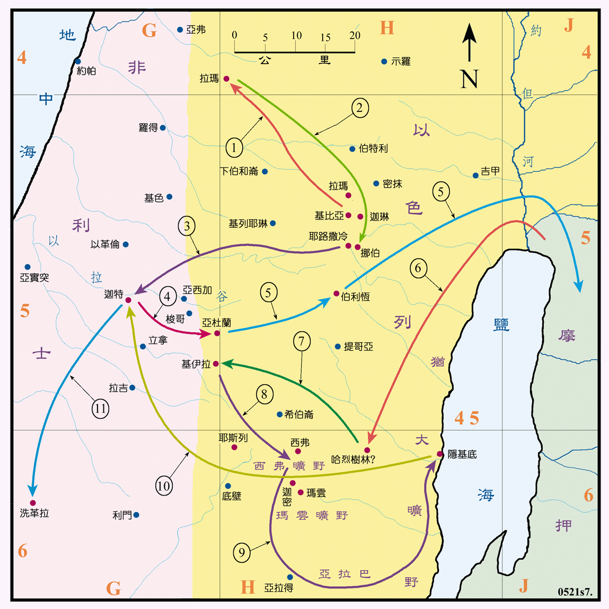

1020? ～1010BC

行动线说明
| 序号 | 圣经 | 说明 |
|---|---|---|
| 1 | 撒上18:10-24 | 扫罗两次要刺杀大卫，又用计陷害他，他就逃往拉玛见撒母耳，扫罗也追去。 |
| 2 | 撒上21:1-9 | 大卫逃到挪伯，祭司亚希米勒给了他圣饼和歌利亚的刀。 |
| 3 | 撒上21:10-15 | 大卫逃到非利士，投靠迦特王亚吉。 |
| 4 | 撒上22:1-3 | 因怕迦特王害他，又逃往亚杜兰洞，他的家人和一些受逼迫的，都去跟随他。 |
| 5 | 撒上22:3-5 | 大卫将父母送去摩押的米斯巴。 |
| 6 | 撒上22:5 | 大卫从摩押回犹大地，进入哈烈的树林。 |
| 7 | 撒上23:1-5 | 非利士人攻击基伊拉，大卫前往营救。 |
| 8 | 撒上23:7-14 | 扫罗要攻打基伊拉，大卫逃到西弗的旷野。 |
| 9 | 撒上23:24-24:7 | 大卫逃避扫罗的追杀，从西弗旷野、经亚拉巴、玛云的旷野，到了隐 基底的山寨。扫罗追至隐基底的旷野中的山洞大解时，大卫只割下扫罗的衣襟而未杀他。 |
| 撒上26:6-12 | 大卫又在西弗的旷野，夜间偷进扫罗的帐中，只取去他的枪和水瓶，也没有杀他。 | |
| 撒上25:1 | 撒母耳去世 (1015BC 前后，八十五岁左右)。 | |
| 10 | 撒上27:3-6 | 大卫去投靠非利士的迦特王亚吉，亚吉将洗革拉赐给他。 |
| 11 | 撒上27:7 | 大卫去洗革拉，在那里他住了一年四个月。 |
大卫逃亡有五年之久，所到之处，都是山地、旷野和森林，人烟稀少，生存困难的地区，搜索也十分的不易。扫罗追杀他十分的急，经常亲自出马。大卫也有两次可以将扫罗杀死的机会，但都因大卫认为扫罗是耶和华的受膏者，所以未下手。反而是扫罗却锲而不舍的苦苦追杀。在这段时间中，有很多受逼迫的人都去投靠他，又得到非利士人的协助，最后在洗革拉城建立了一支相当庞大的军力。